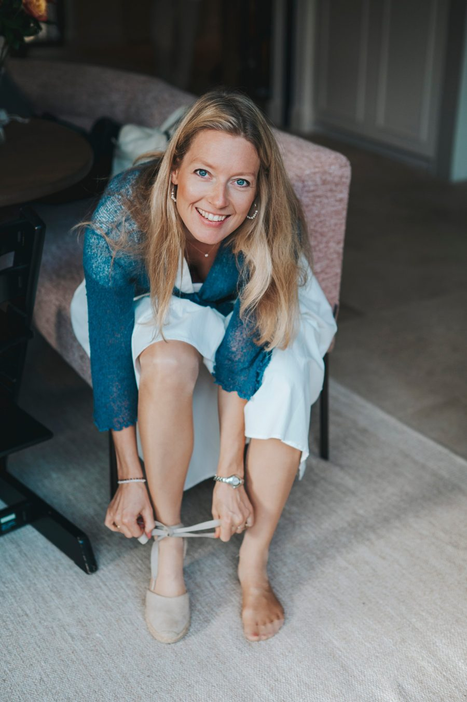

Who we are
Pride in today, care for tomorrow.
The Doyennes is a community of women and families united by a shared passion: building a better world for our children. We believe in taking pride in today’s achievements while consciously shaping what we pass on to the next generation.
After years of building our families and focussing on our careers, we’ve reached a point where we can look beyond growing our own wealth: what matters to society, and what do we want to leave behind for future generations?
Why we giveOur mission
Three themes, one mission.
We achieve this mission by supporting organisations via impact investing, venture philanthropy and traditional philanthropy.
Theme 1
Nature, Environment and Climate
Theme 2
Health, Food System Transition and Animal Welfare
Theme 3
Education and Women’s Empowerment
themes, one shared mission
ways to give: invest, coach, donate
a year we convene to share knowledge
family events: a New Year’s dinner and a summer event
We believe that a conscious luxury lifestyle can go hand-in-hand with making a meaningful ánd impactful contribution to the world.
We make a difference through who we are, the choices we make, and the actions we take. The Doyennes is for you when… you want to become the architect of your own legacy.
Why we give
Three reasons we give together.
Because we feel the responsibility to make the world a better place.
Many women feel they have much more to offer than their current circumstances allow. You are proud of your accomplishments, yet you feel a deep responsibility to leave a positive footprint for the next generation. The Doyennes is a community for women who don’t just dream of change, but actively realize it.
Because it makes us happier.
More income does make people happier, but less so with every extra euro: once you have a lot, it takes a big step to still feel the difference. Giving works differently. Research across countries worldwide shows that people who give feel better. The effect is strongest when you can see what your gift actually achieves.¹ That’s why we focus on impact that can be seen and measured.
Because it empowers us.
We learn new things and become a compelling conversationalist with stories worth sharing. Fully step into your personal power. Express yourself on the content to your children, family and friends. Apply the principle of ‘Practice what you preach’ in person, with real, large-scale impact.
¹ Aknin, L.B. et al. (2013). Prosocial spending and well-being: cross-cultural evidence for a psychological universal. Journal of Personality and Social Psychology, 104(4), 635–652.
What we do
Smart money, visible impact.
A better world doesn’t start only with ourselves. Reusable coffee cups and local tomatoes are good, but we make the biggest difference by putting money to smart use: funding interventions that change systems.
In addition, we believe in visible impact nearby and supporting people and organisations we believe in. Therefore, our organisations roughly fall into two groups.
Group 1
Close to our hearts
Organisations we feel personally connected to, such as supporting children growing up in poverty, or the local food bank. Causes can be put forward by all members.
Group 2
Proven effective
- demonstrably work on the world’s most pressing problems;
- achieve the greatest impact per euro donated;
- have been rated highly effective, based on scientific research, by independent evaluators like GiveWell.
Every organisation has its own needs in order to make the biggest possible impact. The Doyennes assess what an organisation needs most:
Impact investing
You invest capital in companies, funds or projects with the deliberate intention of creating measurable social or environmental impact alongside a financial return. Investors choose where they sit between “impact first” (accepting lower returns for greater impact) and “finance first” (market-rate returns), and they actively track and report the impact achieved.
Venture philanthropy
You fund and actively coach social organisations for several years so they grow stronger and can scale, with social return as the goal. It combines the heart of philanthropy with the tools of business. It’s not about making money, but it is about making change.
Traditional philanthropy
You donate to causes you believe in, with no strings attached, so organisations can do work that the market will never pay for.
How it works
How The Doyennes work
Step 1
Develop (more) vision
We will guide you to explore which values matter to you and your family most. We help you discover your own vision on the legacy you would like to leave behind. The first year, you will get a clear vision on what is needed in the world and what fuels your drive to make the world a better place. What excites you, and what truly lights you up?
We will guide you with masterclasses on impact philanthropy, a session on personal values, and deep dives in charitable projects you like.
Step 2
Decide how to donate
There are many aspects to making impact. We combine all our knowledge and experience in order to make the biggest impact. We decide together on:
- The problems we would like to solve
- The organisations that can contribute to this in a good and effective way
- What the organisations need in order to do this (impact investing, venture philanthropy, donations)
- What this will ask from The Doyennes in terms of e.g. network, money, time
Each year, we decide as a group by a voting system which organisations to support.
Step 3
Get togethers
Beyond a seat in this unique network, we offer a year-round programme of depth and influence:
- Knowledge: the latest trends and impact measurement of charitable projects. We convene four times a year to exchange knowledge and maximise our collective impact.
- Influence: a direct vote in selecting new members of The Doyennes and new philanthropic projects.
- Connection: twice a year, a family event: a New Year’s dinner with partner and an inspiring family summer event.
Good to know
Tax and governance
Tax matters (Dutch situation)
A gift is gone for good, an investment stays yours.
That’s why only philanthropy qualifies for the gift deduction (giftenaftrek).
Read the detailsHide the details
- Traditional and venture philanthropy (gifts): donations to an ANBI (a registered public benefit organisation) are deductible from your income in box 1. For a one-off gift, only the part above 1% of your aggregate income is deductible, up to a maximum of 10% of that income. Periodic gifts have no threshold, only a cap of €1.5 million per year (2026). The tax saving in 2026 is at most 37.56% of your gift. With venture philanthropy, it is partially deductible.
- Impact investing: for tax purposes this is an ordinary investment. You get no deduction, and the assets are taxed in box 3, or in box 2 if you invest through a holding company (BV).
In short, the government gives philanthropy a tax incentive, and from 2028 impact investing gets none. We are not tax advisers, so have your specific situation checked by one.
Belastingdienst: gift aftrekkenGovernance
Transparent, every year.
Once a year, we take a fresh look at which organisations to support, guided by what the world needs and where our contribution can make the biggest difference. The board decides annually which causes receive that money. At the end of each year, we evaluate what our donations achieved and use that to choose the causes for the year ahead.
Our foundation is governed by a board of at least three people: a chair, a secretary and a treasurer.
About the founder
Hanna Lange-Sluijsmans
Founder, mother of two
I’m Hanna Lange-Sluijsmans, born in 1983 in the Netherlands. As a mother of two, and aware of the privileged position I am in, I felt the urge to start The Doyennes. I want to do everything in my power to protect our planet for our children, and for the generations that follow. Let me explain why.
I grew up in a family that was part of a meditation movement, and I went to a school with a strong focus on emotional development, creativity and nature. After completing my MSc in Psychology at the University of Twente, my work in academic international relations took me around the world. There, I saw the uplifting power of education. I firmly believe that educating women lifts up not only the women themselves, but society as a whole. Over decades of hands-on experience, the Gates Foundation has found this to be the case. [SOURCE TO ADD]
While traveling, I also saw a great deal of pollution and inequality. This moved me to shift my career toward sustainability, working for governmental and political organizations. For years, this work felt deeply fulfilling. It was also challenging, as policies and funding often changed with the political tide.
Along the way, I came to understand how money can drive and accelerate change. My husband, Dennis, is a self-made entrepreneur in fintech. Through him I got to know the financial world and saw the immense power of money in shaping our future. I believe that by guiding a growing flow of capital toward future-proof companies and non-profit organizations, we can steer the future in a truly effective way.
My professional experience and my life as a mother have made it part of my DNA to feel responsible for the wellbeing of future generations, animals and our planet. That is why I want to dedicate the best years of my life to this work, and make them count.

“My mission is to create the greatest possible positive impact on the world’s challenges. I’d love to do this together with like-minded people, to increase our impact and inspire more people to leave a lasting legacy.”
New members
Become one of us.
If you are interested in joining The Doyennes, send us an email and we will schedule a meeting to find out whether there is a match.
For more information, email hanna@thedoyennes.com